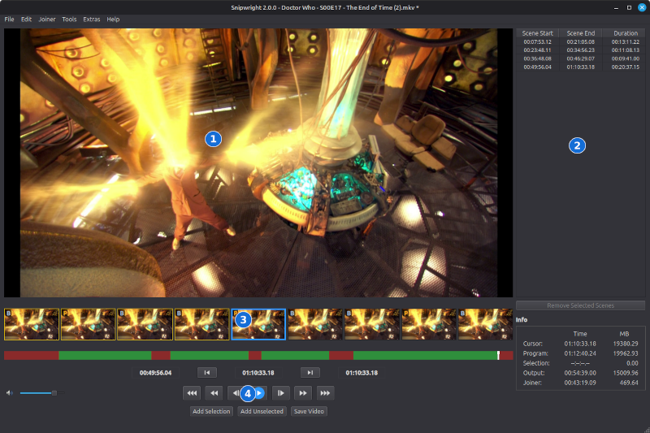
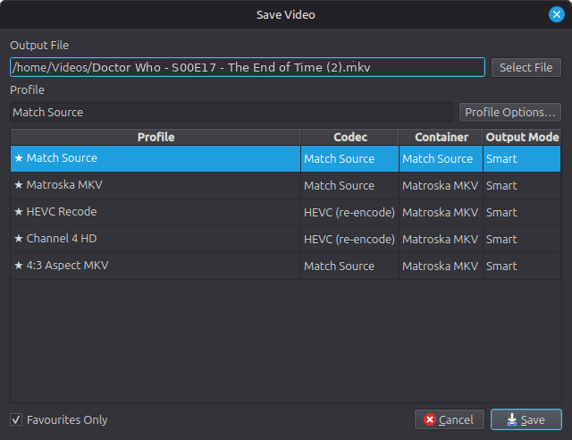
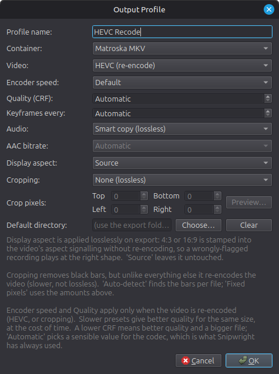
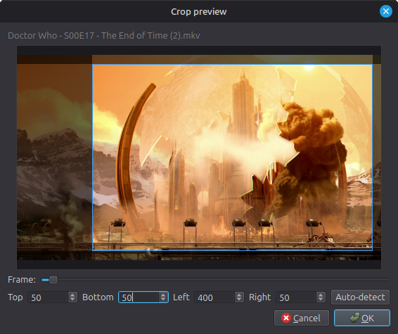
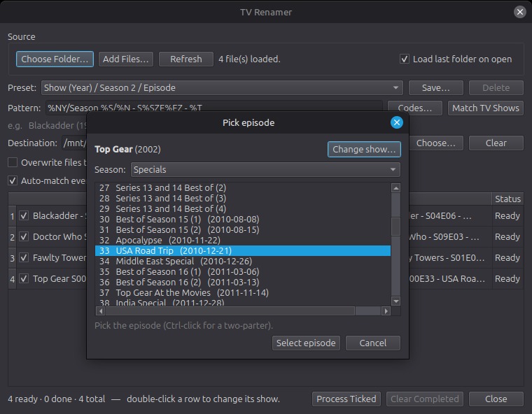
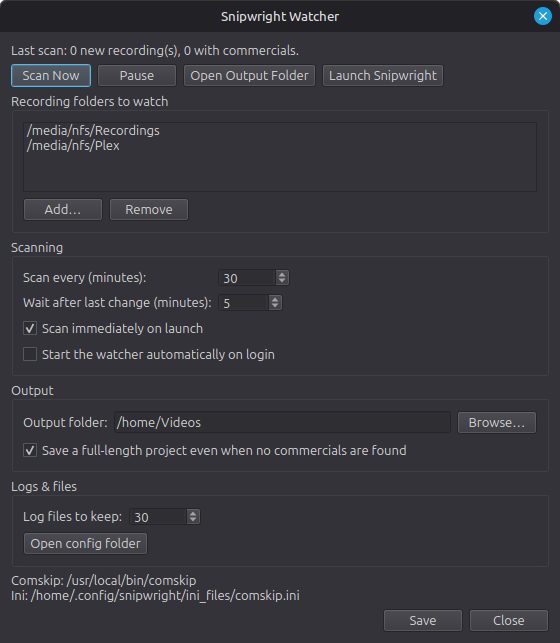

Ein bildgenauer, verlustfreier Videoschneider für Linux — inspiriert von VideoReDo.
Snipwright schneidet unerwünschte Abschnitte — wie zum Beispiel Werbung — bildgenau und, wann immer möglich, verlustfrei aus Videoaufnahmen heraus: Das beibehaltene Videomaterial wird direkt via Stream-Copy kopiert, anstatt es neu zu kodieren. Dadurch gibt es keinen Qualitätsverlust und Exporte sind extrem schnell. Es verarbeitet gängige Broadcast- und Dateiformate, einschließlich H.264 und MPEG-2, und funktioniert mit fast allen gängigen Videoquellen.
Wenn dir Snipwright bekannt vorkommt, ist das Absicht. Ich habe selbst rund zwei Jahrzehnte lang VideoReDo genutzt und die Benutzeroberfläche so nah wie möglich am Original gehalten. So fühlt es sich für jeden, der umsteigt, direkt vertraut und komfortabel an — auch die Funktionsweise bildet den klassischen VideoReDo-Workflow ab. Verstehe es jedoch als eine leichtere Alternative: Snipwright bringt den Kern-Workflow von VideoReDo in eine native Linux-Anwendung, zielt aber nicht darauf ab, den kompletten Funktionsumfang von VideoReDo eins zu eins abzubilden.
Abseits des Schneidens kann Snipwright Werbeblöcke automatisch erkennen, Aufnahmen anhand von TMDB-Daten umbenennen und den gesamten Ablauf von der Rohaufnahme bis zur fertigen Medienbibliothek teilautomatisieren — dank eines Ordner-Watchers und einer Stapelverarbeitung (Batch-Warteschlange). Es läuft zwar nicht komplett unüberwacht im Hintergrund — du behältst stets die Kontrolle — aber es nimmt dir den Großteil der manuellen Arbeit ab.
ffmpeg und ffprobe auf deinem System. Die automatische Werbeerkennung funktioniert ohne weiteres Zutun mit Chalkline, das integriert ist und weder installiert noch eingerichtet werden muss. Comskip wird als Alternative unterstützt, falls Chalkline bei einem bestimmten Sender nicht die gewünschten Ergebnisse liefert — es ist ein eigenständiges Programm, das du selbst installierst. In beiden Fällen: siehe Abschnitt 4.Öffne eine Aufnahme über Datei → Video öffnen (Ctrl+O) oder wähle eine kürzlich verwendete Datei unter Datei → Zuletzt geöffnet aus. Snipwright unterstützt gängige TV-Broadcast- und Videotypen — .ts, .mkv, .mp4, .m2ts, .mov, .avi sowie die MPEG-Programmstrom-Familie (.mpg, .mpeg, .vob) — und du kannst jede andere Datei über den Filter Alle Dateien aufrufen. Du kannst eine Datei auch
per Drag & Drop auf das Fenster ziehen, um sie zu öffnen; ein
Projekt — ein .swproj oder ein .vprj — landet dabei direkt im Editor. Wählst du mehrere Videos auf
einmal aus — im Öffnen-Dialog oder indem du sie gemeinsam ablegst —, bietet
Snipwright an, sie alle als jeweils vollständige Datei zur Joiner-Liste hinzuzufügen (siehe
Aufnahmen zusammenfügen). Das Editor-Fenster ist in vier Hauptbereiche
unterteilt:

Das Editor-Fenster: ① Vorschau · ② Szenenliste · ③ Vorschaubilder-Leiste und Zeitleiste (Grün = Behalten, Rot = Schneiden) · ④ Wiedergabesteuerung.
Beim ersten Öffnen einer Aufnahme erstellt Snipwright einen Frame-Index, um präzise spulen zu können. Dieser Index wird im Cache gespeichert, sodass ein erneutes Öffnen derselben Datei blitzschnell und ohne Wartezeit erfolgt.
packaging unkomplizierte Installations-Skripte mit — install-linux.sh für Debian/Ubuntu/Mint und install-windows.ps1 für Windows. Diese richten alle Abhängigkeiten, eine virtuelle Umgebung sowie Menü- und Desktop-Verknüpfungen ein, sodass du die Anwendung wie jedes andere Programm direkt über dein Startmenü aufrufen kannst. Unter Windows bietet es außerdem an, Snipwrights eigenen Python-Ordner von der Prüfung durch Windows Defender auszunehmen, wodurch der erste Start nach einem Neustart spürbar schneller wird; es erklärt vorher, was das bedeutet, und tut es nur, wenn du zustimmst. Um Snipwright wieder zu entfernen, starte uninstall-linux.sh bzw. uninstall-windows.bat aus demselben Ordner: Vor dem Löschen deiner Einstellungen wirst du gefragt, und deine Aufnahmen, Projekte, exportierten Videos und Protokolle bleiben unangetastet. Details findest du in der dortigen README-Datei.Snipwright bietet dieselben zwei Bearbeitungsmodi wie VideoReDo. Du wählst sie unter Einstellungen → Allgemein → Bearbeitungsmodus; die Auswahl wird wirksam, sobald du das nächste Video öffnest.
Beide Modi arbeiten auf derselben zugrunde liegenden Schnittliste und liefern identische Ergebnisse — nur der Weg dorthin unterscheidet sich. Die Schaltflächen unter den Wiedergabetasten passen sich dem Modus an, und die Liste rechts zeigt entsprechend entweder die Schnitte oder die behaltenen Szenen.
Die automatische Werbeerkennung (siehe Automatische Werbeerkennung) funktioniert in beiden Modi: Der Detektor markiert, wo er die Werbeblöcke vermutet, und gibt dir damit einen Ausgangspunkt zum Nachbessern statt einer leeren Zeitleiste. Wie genau diese Markierungen sitzen, hängt vom Sender ab — und bei Comskip zusätzlich von deinen .ini-Einstellungen. Es lohnt sich also immer, jede einzelne vor dem Speichern zu prüfen.
Nutze die Wiedergabetasten oder die Tastatur, um dich durch die Aufnahme zu bewegen: Gehe einzelne Frames vor oder zurück, springe vor oder zurück oder springe direkt an den Anfang oder das Ende. Behalte dabei die Vorschaubilder-Leiste im Auge — sie macht das Finden des exakten Schnittbilds spürbar einfacher. Um zu einem bestimmten Zeitstempel zu springen, verwende Gehe zu Timecode (Ctrl+G).
Es gibt drei Sprungweiten, standardmäßig 10, 30 und 120 Sekunden:
Hältst du ein Sprung-Tastenkürzel gedrückt, springt es weiter, etwa zehnmal pro Sekunde, bis du loslässt.
Alle drei Weiten lassen sich unter Einstellungen → Allgemein ändern; die Kurzhinweise der Schaltflächen passen sich entsprechend an. Die Tastenkürzel selbst sind unter Tastaturkurzbefehle aufgeführt.
Auch mit dem Mausrad kannst du navigieren. Über dem Vorschaubild, der Vorschaubilder-Leiste oder der Zeitleiste bewegt eine Raste einen einzelnen Frame — praktisch, um den genauen Schnittpunkt festzulegen, ohne die Hand von der Maus zu nehmen. Hältst du dabei Ctrl gedrückt, entspricht jede Raste dem kurzen Sprung (zehn Sekunden, sofern du das nicht geändert hast), sodass du erst schnell Strecke machen und dann feinjustieren kannst. Nach oben scrollen bewegt dich in der Aufnahme vorwärts, nach unten scrollen zurück.
Wiederhole das für jeden Werbeblock. Ein Schnitt mitten in der Sendung teilt sie in zwei Teile, sodass du eine Aufnahme Block für Block durchgehen kannst. Um eine Aufnahme in einem Rutsch vorne und hinten zu kürzen, markierst du die Sendung selbst und drückst Nicht Ausgewähltes entfernen (Ctrl+T) — damit fällt alles außerhalb des markierten Abschnitts weg.
Die Liste rechts zeigt die Schnitte, die du gesetzt hast. Wählst du eine Zeile aus und entfernst sie, kommt dieser Teil der Sendung wieder zurück. Alle Szenen löschen (Shift+Insert) entfernt sämtliche Schnitte und stellt die vollständige Aufnahme wieder her.
Wiederhole das für jedes Segment, das du behalten willst. Wenn du Anfang und Ende über eine bereits existierende Szene hinweg markierst, wird sie durch die neue Auswahl ersetzt. Einen Schnitt zu korrigieren ist also so einfach wie ein kurzes Neumarkieren.
Die Marker für Anfang und Ende bleiben nach dem Hinzufügen einer Szene stehen; jeder wird erst ersetzt, wenn du ihn das nächste Mal setzt. Fällt dir also direkt nach dem Hinzufügen auf, dass eine Grenze ein oder zwei Bilder daneben liegt, verschiebst du nur diesen einen Marker und drückst erneut Auswahl hinzufügen — die eben erstellte Szene wird dann angepasst, statt eine zweite anzulegen. Für Auswahl herausschneiden im Schnittmodus gilt dasselbe.
Wenn du einen Eintrag in der Liste neben dem Video auswählst — per Klick oder mit den Tasten Auf/Ab —, wird er in die Marker für Anfang und Ende geladen, und die Abspielposition springt an seinen Beginn. Das ist der schnellste Weg, eine bereits erstellte Szene zu korrigieren: auswählen, den falsch sitzenden Marker verschieben und Auswahl hinzufügen (bzw. Auswahl herausschneiden im Schnittmodus) drücken, um sie zu ersetzen. Die Zeile Auswahl im Info-Bereich zeigt Dauer und Größe dessen an, was gerade markiert ist.
Nicht ausgewählte hinzufügen (Ctrl+Insert) bewirkt das Gegenteil: Es füllt jede Lücke als behaltene Szene aus — das ist praktisch, wenn es schneller geht, die zu entfernenden Teile zu markieren und die Auswahl anschließend zu invertieren. Mit Alle Szenen löschen (Shift+Insert) fängst du wieder von vorne an.
Der farbige Balken unter den Vorschaubildern zeigt dir die Form deines Schnitts auf einen Blick:
Wenn die geöffnete Datei bereits Kapitel enthält, werden deren Anfangspunkte automatisch als Szenenmarker übernommen; die Statusleiste meldet, wie viele geladen wurden. Das betrifft vor allem Dateien, die durch einen Encoder gelaufen sind — hochskaliertes oder neu kodiertes Material behält seine Kapitel in der Regel, und Snipwright schreibt beim Export die eigenen Marker als Kapitel. Eine zuvor gespeicherte Datei öffnet sich daher wieder mit genau diesen Markern.
Ein Kapitel ganz am Anfang der Datei wird übergangen, denn Encoder setzen es dort, um „den Anfang“ zu kennzeichnen, und nicht als eigentliche Marke. Beim Öffnen eines Projekts gelten dessen eigene Marker; sie werden nie ersetzt. Aufnahmen direkt vom Tuner enthalten keine Kapitel — für sie ändert sich nichts.
Anstatt alles von Hand zu markieren, kannst du Snipwright die Werbung suchen lassen. Starte die Erkennung über das Menü Werkzeuge (Ctrl+A); sie analysiert die Aufnahme im Hintergrund und wandelt die Ergebnisse in behaltene Szenen um, die du anschließend visuell nachjustieren kannst.
Es gibt zwei Detektoren, und du wählst zwischen ihnen unter Einstellungen → Werbeerkennung. Die Wahl gilt überall — Editor und Watcher verwenden beide den ausgewählten Detektor, sodass eine Aufnahme von Hand nie anders erkannt wird als unbeaufsichtigt.
Chalkline wertet das Senderlogo, die Form des Bildes und das Seitenverhältnis aus, um herauszufinden, wo die Unterbrechungen liegen. Sein Leitgedanke: Eine falsche Antwort ist schlimmer als gar keine. Wenn es sich nicht sicher ist, meldet es lieber gar nichts, statt zu raten und einen Teil der Sendung zu entfernen. Eine Aufnahme, zu der es nichts sagt, ist eine, die du von Hand markierst — und nicht eine, bei der die Werbung stillschweigend übersehen wurde.
Der Vor- und Nachlauf des Aufnahmegeräts — die wenigen Minuten vor Beginn der Sendung und der längere Abschnitt nach ihrem Ende — wird zusammen mit der Werbung entfernt. Am Anfang ist das zuverlässig. Am Ende hängt es vom Sender ab: Ändert sich die Form oder das Seitenverhältnis des Bildes zum Ende der Sendung und bleibt so, schneidet Snipwright bis zum Ende der Aufnahme; ist das nicht der Fall, endet der Schnitt bei der Werbeunterbrechung nach der Sendung, und ein Stück Programmübergang bleibt am Ende stehen. Das lohnt einen Blick vor dem Exportieren und ist von Hand schnell erledigt — vom Ende der Sendung bis zum Ende der Aufnahme markieren und schneiden.
Chalkline wird bei einem Sender mit der Zeit besser — aber nur durch Arbeit, die du selbst geprüft hast. Ist „Senderlogos aus meinen Bearbeitungen lernen“ aktiviert, merkt sich Chalkline beim Korrigieren einer Erkennung und Speichern des Projekts, wie das Logo dieses Senders aussieht, und die nächste Aufnahme dieses Senders wird besser erkannt.
Aus den eigenen unbeaufsichtigten Ergebnissen lernt es nie. Einen Detektor mit seinen eigenen Vermutungen zu füttern verstärkt genau die Fehler, die er gemacht hat; die Ausgabe des Watchers ist deshalb bewusst ausgeschlossen — es zählt nur ein Projekt, das du selbst bearbeitet und gespeichert hast.
Ein paar Bedingungen müssen erfüllt sein, bevor überhaupt etwas gelernt wird, und alle drehen sich darum, eine verlässliche Grundlage zum Lernen zu haben:
.swproj oder .vprj gespeichert. Eine EDL hält die Länge der Aufnahme nicht fest, sodass sich Vor- und Nachlauf nicht von Werbung unterscheiden ließen.Ein Sender kann am Ende mehr als ein Logo haben — ein Sender ändert sein Logo, oder eine Aufnahme zeigt es deutlicher als eine andere. Snipwright behält bis zu vier davon und entscheidet anhand deiner eigenen Arbeit zwischen ihnen: Jedes Mal, wenn du ein von dir korrigiertes Projekt speicherst, werden die vorhandenen Logos an deinen Schnitten gemessen, und das beste wird von da an verwendet. Ein Logo, das aus der gerade gespeicherten Aufnahme gelernt wurde, muss sich erst an einer späteren bewähren — so kann eine einzelne schwierige Aufnahme kein Logo verdrängen, das bisher gut funktioniert hat.
Derselbe Durchgang sucht auch nach dem Pausen-Ident eines Senders — einer kurzen, bildfüllenden Tafel, die manche Sender ganz am Anfang und am Ende jeder Werbepause zeigen, etwa der rote Ident von Film4. Erscheint eine solche Tafel an den Rändern der meisten Pausen in deinem korrigierten Projekt und nirgends in der Sendung selbst, merkt Snipwright sie sich. Von da an setzt es damit Anfang und Ende jeder Pause bildgenau, und bei einem Sender, bei dem sonst nichts die Pausen kennzeichnet — ein bildfüllender Film auf Film4 hat kein Logo und keine schwarzen Bilder zwischen Film und Werbung —, findet es damit die Pausen selbst. Vorlauf und Ende einer Aufnahme kennzeichnet der Ident nicht; bei einem solchen Film musst du sie eventuell noch von Hand kürzen.
Öffne Einstellungen → Werbeerkennung → Gemerkte Logos…, um zu sehen, was Chalkline gelernt hat. Jede Zeile zeigt den Sender, eine Zeichnung der gespeicherten Logomaske, wie viele Pixel diese Maske umfasst und ob das Logo dauerhaft oder nur zeitweise zu sehen ist, sowie einen Kontrastwert — je höher, desto sauberer das Signal, mit dem gearbeitet werden kann.
Bei einem Sender mit mehr als einem Logo steht in der Spalte „Maske“ „bestes von“ und die Anzahl der gespeicherten Logos. Hältst du den Zeiger irgendwo auf die Zeile dieses Senders, siehst du zu jedem gespeicherten Logo, an wie vielen deiner Projekte es gemessen wurde und wie viele Unterbrechungen es erfunden hätte, und welches gerade verwendet wird. Benennst du ein Logo auf einen Namen um, der bereits eines hat, werden beide zusammengeführt und beide Logos behalten; der Sender verwendet weiterhin das bisherige, bis dein nächstes korrigiertes Projekt entscheidet, welches besser ist.
Auch Sender ohne Logo werden aufgeführt. Film4 zum Beispiel blendet kein Logo ein, daher erkennt Chalkline seine Unterbrechungen stattdessen am Ident, das an deren Rändern gezeigt wird; seine Zeile zeigt ein kleines Bild dieses Idents und in der Spalte „Maske“ den Hinweis „Kein Logo“. Die Spalte „Idents“ zählt die Idents, die ein Sender gelernt hat. Sender und Dienst-ID einer solchen Zeile kannst du genauso ergänzen und zusammenführen wie bei einem Logo, sodass Idents, die aus den Aufnahmen des einen Aufnahmegeräts gelernt wurden, auch für die des anderen verwendet werden.
Entferne das Häkchen bei Lernen für einen Sender, der bereits gut erkannt wird. Alles, was er gelernt hat, wird weiterhin verwendet, um seine Unterbrechungen zu finden, aber das Speichern eines korrigierten Projekts für diesen Sender startet keinen Lerndurchgang mehr, der bei einer langen Aufnahme einige Minuten dauern kann. Setze das Häkchen wieder, wenn der Sender sein Logo oder seine Idents ändert.
Logos, die Chalkline gelernt hat. Jede Zeile trägt sowohl einen Sendernamen als auch eine Dienst-ID, sodass Aufnahmen von beiden Arten von Aufnahmegeräten demselben Logo zugeordnet werden. Für Channel 4 HD ist das Lernen ausgeschaltet, und LEGEND hat neben seinem Logo auch ein Pausen-Ident gelernt.
Die Spalten Sender und Dienst-ID sind beide bearbeitbar, und das ist das Einzige in diesem Dialog, was du womöglich wirklich tun musst. Aufnahmegeräte sind sich uneinig darüber, was sie behalten: Die einen bewahren den Sendernamen auf, die anderen nur die numerische Dienst-ID. Keines behält beides, und Snipwright hat keine Möglichkeit, das eine mit dem anderen zu verknüpfen. Derselbe Sender, auf zwei verschiedenen Geräten aufgenommen, wird deshalb zweimal gelernt, und kein Eintrag hilft dem anderen. Ergänzt du die fehlende Hälfte einer Zeile, werden beide verbunden, und das Logo gilt fortan für Aufnahmen aus beiden Quellen.
Verwerfen entfernt ein gespeichertes Logo nach einer Rückfrage. Der Sender wird dann neu gelernt, sobald du das nächste Mal eine Erkennung für ihn korrigierst und speicherst — so ersetzt du ein Logo, das nicht gut funktioniert.
Comskip ist ein eigenständiges, kostenloses Programm und ist nicht im Lieferumfang von Snipwright enthalten. Du musst es vorab von der GitHub-Projektseite herunterladen und installieren: github.com/erikkaashoek/Comskip. Sobald es installiert ist, hinterlege den Pfad zur Comskip-Ausführungsdatei und deiner .ini-Konfigurationsdatei unter Einstellungen → Werbeerkennung und stelle den Detektor dort auf Comskip.
$c), kannst du pro Sender eine eigene .ini-Datei verwenden. Aktiviere dafür die Option „Wähle die .ini nach Sendernamen im Dateinamen“ unter Einstellungen → Werbeerkennung. Platziere dann Dateien mit dem Namen Comskip_<Sender>.ini (wie etwa Comskip_ZDF.ini oder Comskip_RTL.ini) im selben Ordner wie deine Haupt-.ini. Wenn der Sendername im Dateinamen einer Aufnahme auftaucht, wird diese Datei bevorzugt verwendet (wobei der längste, präziseste Treffer gewinnt) — andernfalls greift die Haupt-.ini. Die Erkennung unterscheidet nicht zwischen Groß- und Kleinschreibung und funktioniert sowohl für den Watcher als auch für die manuelle Erkennung. Rekorder, die den Sendernamen nicht in den Dateinamen einbetten (wie Plex oder Jellyfin), nutzen einfach durchgehend die Haupt-.ini.Deine Schnitte lassen sich als Projekt speichern und später wieder laden, sodass du sie festhalten kannst, ohne das Video neu zu exportieren, oder später an einem Schnitt weiterarbeiten kannst. Datei → Projekt öffnen liest drei Arten: Snipwrights eigenes .swproj, VideoReDos .vprj (sowohl das V5-VRD- als auch das V3-Comskip-Format) und EDL-Schnittlisten. Projekt speichern schreibt das Projekt im Format zurück, das es bereits hat, und bei Projekt speichern unter kannst du jedes der drei wählen.
Ein Snipwright-Projekt (.swproj) vermerkt, zu welcher Aufnahme es gehört, und setzt jeden Schnitt genau auf das gewählte Bild — auch bei einer Sendung, deren Uhr mittendrin springt und bei der Zeitangaben allein unzuverlässig sind. Es bemerkt, wenn es mit einer anderen Kopie der Aufnahme geöffnet wird, findet eine Aufnahme wieder, die zusammen mit ihrem Projekt verschoben wurde, und vermerkt, ob die Schnitte von dir oder von der Werbeerkennung stammen. VideoReDo kann es nicht öffnen — tauschst du Projekte zwischen beiden Editoren aus, nimm also .vprj. Eine EDL ist nur eine Liste von Schnitten: Sie sagt nicht, zu welcher Aufnahme sie gehört, und lässt sich deshalb weder aus dem Dateimanager öffnen noch im Batch-Manager einreihen.
Welches Format Projekt speichern für ein neues Projekt verwendet, legst du unter Einstellungen → Dateien & Ordner → Projektformat fest. Eine neue Installation beginnt mit Snipwrights eigenem Format; eine, die schon vor diesem Format eingerichtet war, bleibt bei .vprj, bis du es änderst. Der Watcher schreibt dasselbe Format, und der Batch-Manager nimmt beide an. Projekte, die Snipwright für den eigenen Gebrauch anlegt — etwa die Kopien, mit denen die Batch-Warteschlange arbeitet —, sind immer .swproj.
Sobald deine Szenen fertig sind, wähle Datei → Video speichern (Ctrl+S). Du bestimmst das Ausgabeprofil und den Zielordner in einem einzigen Schritt.

Der Video-speichern-Dialog, bei dem Ausgabeprofil und Zielort zusammen ausgewählt werden.
Der Schnitt ist so verlustfrei wie möglich: Das beibehaltene Video wird via Stream-Copy übertragen und nicht neu kodiert. Die einzige regelmäßige Ausnahme betrifft eine Handvoll Frames an den jeweiligen Schnittgrenzen. Diese werden kurz neu kodiert (Smart-Encoding), damit der Schnitt exakt auf dem von dir gewählten Frame landet und nicht auf dem nächstgelegenen Keyframe. Eine vollständige Neukodierung des gesamten Videos — was erheblich langsamer ist als ein verlustfreies Speichern — erfolgt nur, wenn du das Video zuschneidest (Cropping), ein Profil wählst, das explizit nach HEVC neu kodiert (siehe unten), oder in ein Containerformat speicherst, das mit den Original-Streams der Quelle inkompatibel ist.
.ts,
.mkv und .mp4 gleichermaßen übertragen — MP4 braucht dabei
etwas Nachhilfe, da seine Player das Flag nicht direkt auswerten, weshalb die Spur zusätzlich
„visual impaired“ benannt wird. Für die Übernahme des Flags nach MKV wird
MKVToolNix 52 oder neuer benötigt; mit einer älteren Version wird die Spur trotzdem
exportiert, nur eben ohne die Kennzeichnung. DVB-Untertitelspuren werden ebenfalls
mitgeführt und passend zum Video geschnitten, wenn nach .ts oder
.mkv gespeichert wird — MP4 kann keine DVB-Untertitel transportieren, dort
und nur dort entfallen sie.Wenn du verschiedene Serien auf verschiedenen Laufwerken ablegst, trage diese Ordner unter Einstellungen → Dateien & Ordner → Favoriten-Ordner ein. Der Dialog „Video speichern“ hat dann eine Schaltfläche Ordner, die den Export direkt in einen davon legt und den bereits vorhandenen Dateinamen beibehält. Zum Umsortieren die Liste ziehen.
Der Batch-Manager hat eine Spalte Ordner, sodass jeder Auftrag in der Warteschlange an einen anderen Ort gehen kann — zwei Folgen einer Serie auf ein Laufwerk, etwas anderes auf ein zweites. Jede Zeile steht zunächst auf Standard, also dem Ausgabeordner des Stapels; wähle einen Favoriten, um nur diesen einen Auftrag anderswo zu speichern. Dateinamen werden weiterhin wie gewohnt gebildet und eindeutig gemacht, sodass zwei Aufträge im selben Ordner sich nicht überschreiben.
Die Auswahl eines Favoriten gilt nur für diesen einen Export. Beim nächsten Mal bietet der Dialog wieder dein übliches Ziel an — das, was du oben unter Videos speichern eingestellt hast —, damit ein einmaliger Umweg nicht unbemerkt zur neuen Voreinstellung wird.
Ein verlustfreies Speichern ist meist in Sekunden erledigt, aber eine vollständige Neukodierung — HEVC oder ein Zuschnitt — kann lange laufen, und das Export-Fenster blockiert währenddessen den Editor. Wenn du in der Zwischenzeit lieber etwas anderes machen möchtest, drücke im Export-Fenster auf An Stapel senden.
Dabei beginnt nichts von vorn und es geht nichts verloren. Der Export läuft genau an der Stelle weiter, an der er gerade war, und schreibt weiterhin in die von dir gewählte Datei unter dem von dir vergebenen Namen — das Einzige, was sich ändert, ist, dass er seinen Fortschritt nun als Zeile im Batch-Manager meldet, anstatt den Editor zu blockieren. Du bekommst den Editor sofort zurück und kannst eine andere Aufnahme öffnen, schneiden und sogar speichern, während die erste noch kodiert wird.
Du kannst Profile unter Werkzeuge → Profile verwalten konfigurieren. Die folgenden Einstellungen sind die Felder innerhalb eines Profils und nicht die Profilnamen, unter denen du beim Speichern auswählst — Snipwright bringt drei Profile mit (Match Source, Matroska MKV und MP4), und jedes davon ist lediglich eine gespeicherte Kombination dieser Felder. Beachte, dass „Match Source“ sowohl der Name eines mitgelieferten Profils als auch eine der Container-Optionen ist — das sollte man auseinanderhalten. Ein Profil steuert Folgendes:
.ts bleibt eine .ts.
Bearbeiten eines Ausgabeprofils.
Das Zuschneiden entfernt schwarze Balken (Letterbox oder Pillarbox). Da diese Balken fester Bestandteil des Bildes sind, löst das Zuschneiden die oben erwähnte vollständige Neukodierung aus, weshalb dieser Vorgang deutlich langsamer ist als ein normaler verlustfreier Export. Wähle Automatisch erkennen, um die Balken pro Datei automatisch zu ermitteln, oder Feste Pixel, um die Werte manuell einzugeben. Wenn eine Aufnahme geöffnet ist, zeigt dir die Schaltfläche Vorschau… ein echtes Frame mit schattiertem Zuschnitt an; nutze den Schieberegler, um ein passendes Bild zu wählen, passe die Ränder visuell an oder überlasse die Erkennung der Automatik.

Die Zuschnitt-Vorschau blendet den zu entfernenden Bereich schattiert über einem echten Frame ein.
Über das Menü Joiner lassen sich Szenen — aus einer einzelnen Aufnahme oder aus mehreren — zu einem Video verbinden. Die Liste lässt sich auf zwei Wegen füllen:
Unter Joiner → Joiner-Liste bearbeiten wird die Liste zusammengestellt: Einträge umsortieren oder entfernen, Titeleinblendungen ergänzen (Text auf einer Farbfläche oder einem Hintergrundbild), pro Clip Überblendungen von und nach Schwarz festlegen, Listen speichern und laden oder einen Eintrag zum Kürzen zurück in den Editor schicken.
Joiner → Video aus Joiner-Liste erstellen erzeugt das Ergebnis über denselben Dialog „Video speichern“ und dieselben Ausgabeprofile wie ein normales Speichern. Szenen im selben Format werden verlustfrei per Stream-Copy verbunden — eine MKV-Datei erhält an jeder Nahtstelle ein Kapitel —, während ein Mix verschiedener Formate in ein gemeinsames Format neu kodiert wird (Snipwright schlägt dafür passende Einstellungen vor). Titeleinblendungen und Überblendungen greifen nur bei einer neu kodierten Verbindung; sie zu Clips hinzuzufügen, die ohnehin zueinander passen, kostet also etwas Geschwindigkeit und Qualität. DVB-Untertitel bleiben in beiden Fällen erhalten, und die Untertitel einer Blu-ray werden in dieselbe Art umgewandelt, ob die Verbindung kopiert oder neu kodiert wird, sodass Aufnahmen und Disc-Rips eine gemeinsame Untertitelspur haben. Bei einer neu kodierten Verbindung werden die Untertitel einer Szene, die für eine andere Bildgröße gezeichnet wurden, passend neu gezeichnet, sodass sie in jedem Player erscheinen. Was sich weiterhin nicht mitführen lässt, etwa Videotext bei einer neu kodierten Verbindung oder Rundfunk- und Blu-ray-Untertitel in einer MP4-Datei, nennt die Zusammenfassung am Ende.
Joiner → Joiner-Liste zur Stapelverarbeitung oder Zur Stapelverarbeitung im Fenster der Joiner-Liste erledigt dieselbe Verbindung später im Batch-Manager statt sofort. Dieselben Prüfungen und dieselbe Frage nach dem Neukodieren kommen zuerst, und deine Antwort wird mit dem Job gespeichert. Die Verbindung nutzt dann wie jeder andere Job das Profil und den Ausgabeordner des Batch-Managers und wird nach ihrer ersten Aufnahme mit „ - Joined“ benannt. Der Job ist eine Momentaufnahme der Liste zum Zeitpunkt des Einreihens: Um ihn zu ändern, entferne ihn aus der Warteschlange, bearbeite die Liste und reihe sie erneut ein. Auch eine bereits gestartete Verbindung lässt sich übergeben: An Stapel senden im Fortschrittsfenster verschiebt sie in den Batch-Manager, wo sie genau wie ein Export an der Stelle weiterläuft, an der sie war.
Werkzeuge → Quelldatei beschneiden und kopieren schneidet ein Stück aus einer Aufnahme heraus, indem die Bytes direkt von einer Datei in eine andere kopiert werden. Es wird nichts dekodiert, nichts neu kodiert und nichts geprüft — das macht es ausgesprochen schnell und vor allem für zwei Dinge nützlich: um ein brauchbares Stück aus einer Aufnahme zu retten, die sich nicht mehr richtig öffnen lässt, und um eine kleine Probe aus einer großen Datei herauszuschneiden, die man jemandem schicken möchte.
Lege fest, wo die Kopie beginnt und endet:
Snipwright kann Aufnahmen in eine saubere Struktur bringen, die von Medienservern wie Plex, Jellyfin, Emby und Kodi problemlos verstanden wird. Hierzu werden Daten von TMDB (The Movie Database) herangezogen. Es gibt separate Renamer für Serien und Filme, die du über das Menü Werkzeuge erreichst.
Füge Aufnahmen hinzu und der Renamer ordnet jede Zeile automatisch einer Serie und Episode zu. Doppelklicke auf eine zugeordnete Zeile, um die Episodenauswahl zu öffnen, in der du die exakte Staffel und Episode festlegen kannst. Mit einem Strg-Klick (Ctrl-Click) auf zwei Episoden wählst du eine Doppelfolge aus, und über Serie ändern… korrigierst du eine fehlerhafte automatische Zuordnung. Episoden aus Staffel 0 werden automatisch in einem Ordner namens Specials abgelegt. Ein Benennungs-Muster (Pattern) steuert die Ordner- und Dateinamen und wird für zukünftige Durchläufe gespeichert. Wähle ein fertiges Layout aus der Preset-Liste oder tippe dein eigenes ein. Über Speichern… hinterlegst du das aktuelle Muster unter einem Namen in der Liste, während Löschen selbst erstellte Presets wieder entfernt (die integrierten Standard-Presets können nicht gelöscht werden). Die Serien- und Film-Renamer verwalten jeweils eigene, separate Preset-Listen.

Der Serien-Renamer mit der geöffneten Episodenauswahl über der Aufnahmeliste.
Der Film-Renamer funktioniert nach demselben Prinzip für Spielfilme und ordnet jede Aufnahme einem Titel und dem passenden Erscheinungsjahr aus der TMDB-Datenbank zu.
Der Watcher nimmt dir die lästige Suche nach der Werbung ab. Er überwacht deine ausgewählten Aufnahmeordner und führt, sobald eine neue Aufnahme auftaucht, automatisch den Detektor im Hintergrund aus. Das Ergebnis wird als Projektdatei gespeichert. Der Watcher schneidet oder benennt selbst nichts um — er bereitet die Schnitte lediglich für dich vor. Du behältst das Heft in der Hand: Öffne ein Projekt im Editor, um die Marken visuell zu prüfen und anzupassen, oder schicke es direkt an den Batch-Manager, um es so wie es ist zu verarbeiten.

Der Watcher: Die überwachten Ordner, sein Zeitplan und der Speicherort für Projekte.
Ein Linksklick auf das Tray-Symbol öffnet das Fenster des Watchers, ein weiterer schließt es wieder in den Tray. Ein Rechtsklick bietet alles Übrige: Jetzt scannen, Pause, Snipwright starten, Ausgabeordner öffnen, Ignorierliste bearbeiten, Einstellungen und Beenden.
Der Watcher verwendet den Detektor, der im Editor unter Einstellungen → Werbeerkennung ausgewählt ist. Eine eigene Einstellung hat er nicht, und sein Steuerfenster zeigt an, welcher Detektor zum Einsatz kommt. Bei Chalkline ist nichts einzurichten; ist Comskip ausgewählt, aber sein Pfad noch nicht hinterlegt, sagt der Watcher das ausdrücklich, statt stillschweigend nichts zu tun — den Pfad legst du dann im Editor fest.
Der Watcher führt eine Liste der Aufnahmen, die er bereits geprüft hat, damit er dieselbe nie zweimal untersucht. Eine gelöschte Aufnahme wird irgendwann von dieser Liste genommen — nur so kann eine Wiederholung, die unter demselben Namen aufgezeichnet wird, erneut erfasst werden.
Bei Aufnahmen auf einem NAS oder Server ist hier etwas Umsicht nötig, denn eine Aufnahme, die es nicht mehr gibt, und eine Aufnahme auf einer vorübergehend nicht erreichbaren Freigabe sehen völlig gleich aus. Wird die Freigabe neu gestartet, gewartet oder gerade umbenannt, scheinen alle Aufnahmen darauf auf einen Schlag verschwunden zu sein — und ein Watcher, der das für bare Münze nähme, würde sie alle erneut prüfen, sobald die Freigabe zurück ist.
Genau das tut er nicht. Ein Ordner, den der Watcher überhaupt nicht lesen kann, bleibt strikt unangetastet: Nichts darunter wird vergessen, wie lange er auch fehlt, und das Protokoll des Watchers nennt den Ordner, den er nicht erreichen konnte. Alles andere, was verschwindet, wird für den Zeitraum aufbewahrt, der in den Einstellungen des Watchers unter Fehlende Aufnahmen behalten für (Stunden) festgelegt ist — standardmäßig ein Tag —, und erst dann vergessen, wenn es so lange gefehlt hat. Das deckt den schwierigeren Fall einer Freigabe ab, die zwar eingebunden, aber nicht wirklich lesbar ist, wo der Ordner selbst völlig gesund aussieht.
Nicht jede Aufnahme im Ordner geht dich etwas an. Mit einem Rechtsklick auf das Tray-Symbol und Ignorierliste bearbeiten trägst du einen Sendungstitel pro Zeile ein — die Serien deiner Mitbewohner kommen Comskip so gar nicht erst unter die Augen. Groß- und Kleinschreibung spielt dabei keine Rolle, und Zeilen, die mit # beginnen, sind Kommentare.
Die Einstellung Abgleich neben der Liste bestimmt, wie ein Eintrag mit dem Dateinamen einer Aufnahme verglichen wird:
Gone auch Star Trek S01E03 Where No Man Has Gone Before — das Wort kommt im Episodentitel vor, die Aufnahme wird übersprungen, es entsteht kein Projekt, und nichts weist offensichtlich darauf hin, warum. Der Abgleich über den Sendungsnamen vermeidet das vollständig.Unabhängig von der Auswahl wird ein einzelner Eintrag mit vorangestelltem * immer an beliebiger Stelle abgeglichen — *Weihnachtsspecial funktioniert also, ohne die Einstellung für die gesamte Liste zu ändern. Falls eine Aufnahme übersprungen wird und du nicht erkennst, warum, nennt das Protokoll des Watchers den Eintrag, der gegriffen hat.
Über die Jahre füllt sich eine solche Liste mit Sendungen, die längst eingestellt wurden. Unter Aufräumen kannst du den Watcher Einträge entfernen lassen, auf die über einen bestimmten Zeitraum keine neue Aufnahme mehr gepasst hat — zwölf Monate passen für die meisten Serien, die ja, wenn überhaupt, jährlich zurückkehren. Diese Funktion ist standardmäßig ausgeschaltet. Jetzt prüfen und aufräumen listet jeden Titel mit dem Datum auf, an dem er zuletzt aufgetaucht ist, die ältesten zuerst — so siehst du auf einen Blick, was veraltet ist, und kannst das Häkchen bei allem entfernen, was du behalten möchtest.
Im Batch-Manager findet das eigentliche Schneiden für mehrere Dateien in einem Rutsch statt. Du kannst die aktuelle Aufnahme aus dem Editor via An Batch-Warteschlange senden (Ctrl+B) einreihen oder die vom Watcher vorbereiteten Projektdateien hineinladen. Starte die Verarbeitung anschließend über Werkzeuge → Batch-Manager. Jeder Job nutzt sein zugewiesenes Ausgabeprofil, sodass profilbasierte Optionen wie das Zuschneiden auch hier greifen. (Das Umbenennen ist ein separater Schritt, der von den Renamern durchgeführt wird — der Batch-Manager selbst benennt keine Dateien um.) Du kannst das Batch-Manager-Fenster während eines aktiven Durchlaufs beruhigt schließen — die Stapelverarbeitung läuft im Hintergrund weiter, und ein erneutes Öffnen über Werkzeuge → Batch-Manager zeigt dir den Live-Fortschritt. Aus Überwachungsordner hinzufügen reiht nur Aufnahmen ein, die noch nicht in der Warteschlange stehen — einschließlich derer, die du selbst per An Batch-Warteschlange senden übergeben hast — du kannst die Schaltfläche also beliebig oft drücken.

Der Batch-Manager mitten in einer Warteschlange: ein Auftrag fertig, einer beim Kodieren, zwei wartend — und unten ein Export, der aus dem Editor übergeben wurde, während er bereits lief.
Öffne Werkzeuge → Einstellungen. Die Seiten sind unterteilt in:
.ini-Datei und der optionalen senderbasierten .ini-Auswahl. Alles davon ist in Abschnitt 4 beschrieben.Tastaturkurzbefehle können hier ebenfalls über den integrierten Konfigurations-Editor eingesehen und flexibel angepasst werden.
Beim Reparieren einer Aufnahme mit Quick Stream Fix wird eine Arbeitskopie im Ordner für Arbeitskopien angelegt, und der Editor schneidet diese Kopie statt des Originals. Dieser Ordner wird unter Einstellungen → Wartung festgelegt; lässt du ihn leer, ist es der temporäre Systemordner, den das Feld als Platzhalter anzeigt. Solche Kopien sind vollständige Videodateien — oft mehrere Gigabyte — und sie bleiben erhalten, damit du Snipwright schließen und später an einer Aufnahme weiterarbeiten kannst, ohne sie erneut reparieren zu müssen. Unter Einstellungen → Wartung werden sie gelöscht, sobald sie ein festgelegtes Alter erreichen — standardmäßig eine Woche.
/tmp bei jedem Neustart, sodass Arbeitskopien von selbst verschwinden; Windows leert seinen temporären Ordner nie, sodass sie sich ohne die Alterseinstellung unbegrenzt ansammeln würden. Auf derselben Seite siehst du, wie viel Platz sie belegen, und kannst den Ordner öffnen oder sie sofort löschen.Unter Einstellungen → Wartung lässt sich Nach neuen Versionen suchen auf Nie, Täglich, Wöchentlich oder Monatlich stellen. Gibt es eine neuere Version, weist Snipwright darauf hin und bietet an, die Releases-Seite zu öffnen.
Dies sind die Standardbelegungen; alle Kurzbefehle können in den Einstellungen angepasst werden.
Die drei Sprungweiten sind standardmäßig auf 10, 30 und 120 Sekunden eingestellt und lassen sich
unter Einstellungen → Allgemein ändern. Beachte, dass diese Kurzbefehle in
config.json ihre ursprünglichen Namen behalten — jump_back_30 und so
weiter —, unabhängig davon, welche Weite du einstellst. Eine „30“ im Namen gibt
also den Standardwert wieder, nicht die aktuelle Einstellung.
| Aktion | Kurzbefehl |
|---|---|
| Video öffnen | Ctrl+O |
| Video speichern | Ctrl+S |
| Video schließen | Ctrl+F4 |
| Projekt öffnen / speichern / speichern unter | Ctrl+Shift+O / Ctrl+P / Ctrl+Shift+P |
| An Batch-Warteschlange senden | Ctrl+B |
| Wiedergabe / Pause | Space |
| Ein Einzelbild zurück / vor | Left / Right |
| Kurzer Sprung zurück / vor | Ctrl+Shift+Left / Ctrl+Shift+Right |
| Mittlerer Sprung zurück / vor | Ctrl+Left / Ctrl+Right |
| Langer Sprung zurück / vor | Shift+Left / Shift+Right |
| An den Anfang / das Ende springen | Home / End |
| Anfang / Ende markieren | F3 / F4 |
| Auswahl hinzufügen | Insert |
| Nicht ausgewählte hinzufügen | Ctrl+Insert |
| Auswahl herausschneiden | Ctrl+X |
| Nicht Ausgewähltes entfernen | Ctrl+T |
| Alles auswählen | Ctrl+Shift+A |
| Alle Szenen löschen | Shift+Insert |
| Aktuelle Auswahl löschen | Delete |
| Vorherige / Nächste Szene | F5 / F6 |
| Gehe zu Szenen-Start / Szenen-Ende | S / E |
| Szene an Cursorposition umschalten (An/Aus) | A |
| Werbung erkennen | Ctrl+A |
| Gehe zu Zeitstempel | Ctrl+G |
| Video-Programminformationen anzeigen | Ctrl+L |
| Rückgängig / Wiederholen | Ctrl+Z / Ctrl+Y |
ffmpeg und ffprobe korrekt installiert sind, und hinterlege gegebenenfalls deren Pfade manuell unter Einstellungen → Externe Werkzeuge..ini-Datei gesteuert und erzielt die besten Ergebnisse, wenn es präzise auf deine Videoquelle — insbesondere auf deren Bildwiederholrate (Framerate) — abgestimmt ist. Eine gut optimierte INI-Datei macht bei der Erkennungsqualität einen riesigen Unterschied. Wenn verschiedene Sender unterschiedliche Profile erfordern, nutze die senderbasierte .ini-Option aus Abschnitt 4.Wenn dich das stört, halbiert eine Ausnahme für den Snipwright-Ordner in der Windows-Sicherheit den ersten Start etwa: Windows-Sicherheit → Viren- & Bedrohungsschutz → Einstellungen verwalten → Ausschlüsse → Ausschlüsse hinzufügen oder entfernen → Ausschluss hinzufügen → Ordner, dann den Ordner wählen, in dem Snipwright installiert ist. Dafür sind Administratorrechte nötig. Nur den Unterordner .venv auszuschließen bringt weniger.
Bedenke dabei, was das bedeutet: In einem ausgeschlossenen Ordner wird nichts mehr beim Öffnen geprüft, auch keine Datei, die später dort landet. Das ist deine Entscheidung und keine Empfehlung, und wenn du es tust, sollte der Ordner ausschließlich Snipwright vorbehalten bleiben.
Snipwright deckt die Funktionen ab, die die meisten Anwender bei VideoReDo täglich genutzt haben, verwendet dafür aber nicht immer dieselben Begriffe. Wenn du eine vertraute Einstellung suchst und nicht findest, steht sie vermutlich hier unter einem anderen Namen.
| VideoReDo | Snipwright | Anmerkungen |
|---|---|---|
| Intelligent Recode | Standardverhalten — nichts einzustellen | Bilder werden kopiert, wo immer das möglich ist, und nur dort neu kodiert, wo ein Schnitt mitten in eine GOP fällt. So arbeitet jeder Export, sofern du keine vollständige Neukodierung verlangst — deshalb ist ein verlustfreies Speichern einer einstündigen Aufnahme in Sekunden erledigt. Das Protokoll hält die Aufteilung für jeden Export fest, etwa 1145 segment(s) - 1145 copied, 0 re-encoded. |
| Force Recode | Ausgabeprofil → Video: HEVC | Kodiert die gesamte Datei neu statt nur die Schnittstellen. Beim Zuschneiden gilt dasselbe, denn schwarze Balken lassen sich nicht ohne Neukodierung entfernen. |
| Max GOP length | Ausgabeprofil → Keyframes alle | Angabe in Sekunden statt in Bildern, sodass sie bei einer anderen Bildrate nicht angepasst werden muss. Automatisch verwendet fünf Sekunden für HEVC. |
| Quality Factor Adjustment | Ausgabeprofil → Qualität (CRF) | Ein Qualitätsziel für den Encoder statt eines Prozentwerts der Quelle. Niedriger bedeutet bessere Qualität und eine größere Datei; Automatisch wählt einen sinnvollen Wert für den Codec. |
| Cropping and Resizing | Ausgabeprofil → Zuschneiden | Automatische Erkennung schwarzer Balken oder feste Pixelwerte, mit Vorschau an einem echten Bild aus der Aufnahme. |
| Aspect correction | Ausgabeprofil → Seitenverhältnis | Wird über die Signalisierung im Container umgesetzt, kostet also nichts und kodiert nicht neu. |
| Output profiles | Ausgabeprofile | Dieselbe Idee: benannte Sätze von Ausgabeeinstellungen, wählbar beim Speichern oder pro Stapelauftrag. Werkzeuge → Profile verwalten. |
| QuickStream Fix | Werkzeuge → Quick Stream Fix | Repariert defekte Rundfunkströme durch erneutes Muxen. Snipwright bietet das auch automatisch an, wenn sich eine Aufnahme nicht sauber öffnen lässt. |
| Ad-Detective | Chalkline oder Comskip, dazu der Watcher | Kein umbenanntes Ad-Detective, aber die nächstliegende Entsprechung. Ad-Detective war in VideoReDo eingebaut und ließ sich über einen eigenen Parameter-Dialog einstellen. Chalkline kommt dem im Geiste am nächsten: Es ist in Snipwright integriert und muss überhaupt nicht eingerichtet werden, und es lernt das Logo eines Senders aus deinen Bearbeitungen, statt von Hand abgestimmt zu werden. Comskip ist die Alternative — ein eigenständiges Programm, das Snipwright aufruft und das über eine .ini-Datei statt über eine Oberfläche konfiguriert wird; ein Gegenstück zum Ad-Detective-Fenster gibt es dort nicht. Es lohnt sich, Comskip auf die eigene Quelle abzustimmen, besonders auf deren Bildrate. Was Snipwright mit dem Ergebnis macht, ist in beiden Fällen dieselbe Idee: Die erkannten Werbeblöcke werden zu prüfbaren Schnitten, die du vor dem Speichern bestätigst, und der Watcher kann das Ganze unbeaufsichtigt über neue Aufnahmen laufen lassen. |
| Batch Manager | Batch-Manager | Dieselbe Idee — und ein bereits im Editor laufender Export lässt sich mit An Stapel senden mitten im Lauf dorthin übergeben. |
Snipwright ist Open Source — github.com/infidelus/snipwright.